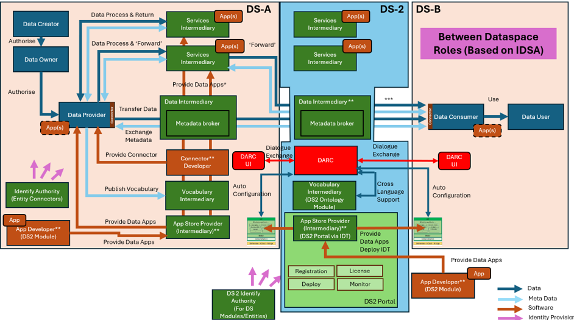
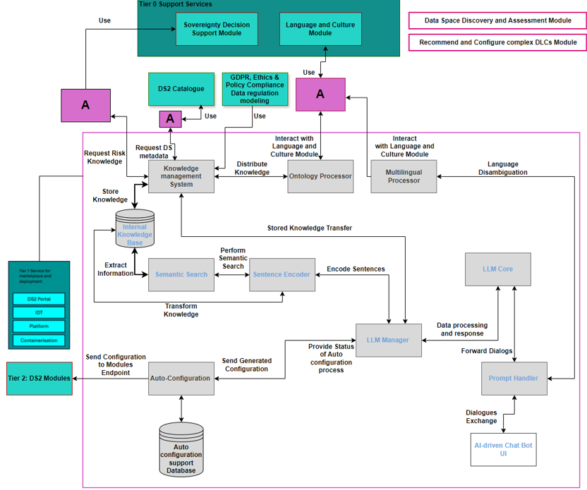
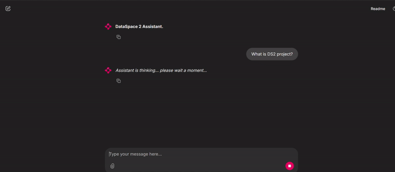

DARC
| Project Links |
|---|
| Software GitHub Repository https://github.com/ds2-eu/DARC.git |
| Progress GitHub Project https://github.com/orgs/ds2-eu/projects/29 |
General Description
To inquire, discover and assess though the conversational UI of an AI-driven agent, the In-Dataspace and Inter-Dataspace data-oriented capabilities and limitations of DS2 Dataspaces as well as DS2 modules (software prerequisites and/or recommendations) which will compose the “ideal use” scenarios/ paths that will fit the needs of the end-users. Then, to complement this by recommending to end-users, though the conversational UI of an AI-driven agent, the best DS2 modules for the implementation of the selected “ideal use” scenario/ path, based on the outcomes of the T5.2 module end-user interaction. Finally, to demonstrate the autoconfiguring, through APIs, a subset of module based on these recommendations so that they can easily create their DS2 pipeline and start using and sharing data.
The DARC Module is responsible for allowing data space participants (Data Providers and Data Consumers) to inquire and discover and receive AI-driven assessment, of prerequisites for the successful execution of complex Digital Life Cycles (DLCs) between participating Dataspaces. Then, for DARC to make recommendations of modules and their configuration based on this assessment with the end game to automatically configure modules which are suitably enabled for configuration.
Architecture
The figure below represents the module fit into the DS-DS environment. 
The figure below represents the actors, internal structure, primary sub-components, primary DS2 module interfaces, and primary other interfaces of the module. 
Component Definition
The subcomponents of DARC are as follows: * AI-driven Chat Bot UI: The User interface subcomponent through which end-users interact with DARC. It allows end-users to provide inputs and receive outputs, facilitating a smooth and intuitive interaction DARC. This subcomponent directly interfaces with end-users for dialogue exchange.
-
Prompt Handler: The Prompt Handler facilitates the exchange of dialogue between the Large Language Model and end-users. It performs initial checks, correcting grammar errors and verifying supported languages. If a language is not supported, the module engages the Ontology/Multilingual Processor for language disambiguation before forwarding the prompt to the LLM Core. This ensures that interactions are both clear and linguistically compatible.
-
LLM Manager: The LLM Manager subcomponent oversees and coordinates the operations of the language model. It ensures seamless integration with other DARC subcomponents and manages the flow of data to and from the LLM core. It acts as an manager and is responsible for all DARC’s module operations that interact with the LLM. This subcomponent facilitates interaction with the LLM Core, managing dialogues, transferring crucial information from the Knowledge Base (using the sentence encoder and semantic search subcomponents), and providing it to the LLM Core to generate outcomes based on user requests. Furthermore, it engages with the Auto Configuration subcomponent to forward the configuration file generated by the LLM Core and reports back to the LLM Core the status of auto configuration to update the user with the status.
-
LLM Core: The primary language model that generates outputs based on the processed inputs and configurations. The LLM Core is the heart of DARC, providing the natural language processing capabilities that drive DARC’s recommendation and configuration capabilities. This subcomponent actively interacts with the LLM Manager, requesting additional details about user queries and receiving crucial information from the knowledge base to ensure dynamic and contextually aware interactions. Additionally, it works with the Prompt Handler, which forwards the tailored responses back to the user, completing the communication loop effectively.
-
Sentence Encoder: The Sentence Encoder, an AI model, converts dialogues and knowledge base content into embeddings (a structured numerical format that makes complex linguistic data more understandable for the LLM and other AI components). This process supports LLM operations by enabling the Semantic Search subcomponent to extract and decode crucial information from these embeddings, transforming it back into text for the LLM Core. This integration enhances DARC’s ability to deliver precise and contextually relevant responses to user queries.
-
Semantic Search: This subcomponent enhances search functionality by using context-aware algorithms to analyse transformed data from the Knowledge Base and inputs derived from user prompts. It processes this information and relays it to the Sentence Encoder subcomponent , which converts the embeddings back into textual data. This allows the LLM to further process and understand the content effectively.
-
Internal Knowledge Base: This is a central repository that stores all essential data and knowledge, such as Regulations and DS2 module documentation, configuration. Serving as the backbone of the application, it provides a robust database that DARC subcomponents can access through Knowledge Management. This ensures that DARC has a solid informational foundation for making informed decisions and configurations. The Knowledge Base works in conjunction with the Knowledge Management subcomponent , which continuously populates it with critical operational details, such as module configurations and compliance with EC regulations. It also interfaces with Semantic Search to extract necessary information for the LLM.
-
Knowledge Management System: The Knowledge Management System subcomponent organises, stores, and retrieves knowledge within DARC. It facilitates efficient information management by structuring and indexing data such as, Dataspace regulations, DS2 modules documentation and configuration information, for easy access and distribution of said data within DARC subcomponents. The Knowledge Management subcomponent supports the internal Knowledge Base and interacts with other DARC subcomponents, namely LLM Manager and Ontology Processor, to provide relevant information as needed. This subcomponent engages with the Data Sovereign Module API, the Culture and Language Module API, and Dataspace Meta-data Broker ensuring that the Knowledge Base is continually updated with crucial information necessary for DARC’s operations. The Knowledge Management System also interacts with the internal knowledge base by incorporating previous information into the internal knowledge base for enhanced decision-making and operational efficiency.
-
Ontology Processor: This subcomponent plays a crucial role in managing ontology information within DARC. It is tasked with processing, storing, and updating ontology data in the Knowledge Base. Additionally, it retrieves and analyses the ontology of data already present in the Knowledge Base. By ensuring that ontology information is accurately maintained and accessible, this subcomponent enhances the DARC's ability to interpret and utilize data effectively, fostering a deeper understanding of the relationships and structures within the stored information.
-
Multilingual Processor: This subcomponent provides robust cross-language support, enhancing DARC's global functionality. It processes outputs from the Culture and Language subcomponent, enabling the LLM to comprehend and interact with previously unknown languages. Additionally, it interacts with the Prompt Handler subcomponent to ensure that multilingual interactions are seamlessly integrated, allowing users to receive assistance in their preferred language. This capability significantly improves accessibility and user experience across diverse linguistic backgrounds.
-
Auto-Configuration: This subcomponent plays a crucial role in automating the setup process for DS2 modules. It begins by receiving a configuration file that has been generated and forwarded by LLM Manager, originally derived from the LLM core. The subcomponent systematically examines this file to identify and rectify any potential errors or inconsistencies. Once it confirms that the configuration file is error-free, it proceeds to implement these settings directly on the DS2 modules’ endpoint. After its successful application, it completes the process by sending a detailed status report back to the LLM through the LLM Manager subcomponent, ensuring seamless communication and integration within DARC.
-
Auto configuration Support Database: This subcomponent maintains essential information such as module endpoints and configuration rules to facilitate the functionality of the auto-configuration subcomponent.
-
Services and APIs:
-
Catalog Module: Catalog Module Meta data broker will send the requested Dataspaces meta-data to DARC’s Knowledge Management subcomponent for discovering data in the participating Dataspaces.
-
Tier 2 DS Modules/Service: Auto-configuration service. For Tier 2 DS Modules via the Auto-Configuration Module.
-
Tier 0 Support Service Stack:
-
Sovereignty Decision Support Module Risk Knowledge Base: API will be driven by DARC to provide information about potential security risks involved during the configuration, assessment, and definition of a participant’s DLC.
-
Culture and Language Module. Ontology and Multi-language Facility Module API – will provide DARC with multilingual support and ontology disambiguation, enhancing DARC's ability to interpret and process diverse linguistic data accurately and effectively across different languages.
-
-
Tier 1 Service Stack for Marketplace and deployment and API: The full stack will be implemented as generically described elsewhere in this document. Exceptions: The Platform will only be needed for inter-participant service orchestrations were used
Screenshots

[Changes on UI are still in progress to align with project's requirements.]
Commercial Information
| Organisation (s) | License Nature | License |
|---|---|---|
| ATC | Commercial Use | Apache 2.0 |
Top Features
-
AI-Driven Conversational UI: Provides an intelligent, user-friendly interface for end-users to interactively inquire, assess, and receive guidance about DS2 Dataspaces and modules.
-
In-Dataspace and Inter-Dataspace Assessment: Enables analysis of capabilities and limitations within a single Dataspace and across multiple interconnected Dataspaces, supporting more complex digital collaboration.
-
Dynamic End-User Profiling & Needs Matching: Assesses user needs and recommends the best-suited DS2 modules to implement ideal data workflows and pipelines.
-
Modular Recommendation Engine: Recommends specific DS2 modules (with configurations and software prerequisites).
-
Auto-Configuration via APIs: Supports seamless, API-based automatic configuration of selected modules to build ready-to-use DS2 pipelines for data usage and sharing.
-
DARC Module for Digital Lifecycle Execution: DARC facilitates AI-driven assessment of prerequisites and feasibility for complex Digital Life Cycles (DLCs) involving multiple data providers and consumers.
-
Cross-Dataspace Collaboration Support: Allows participants from different Dataspaces to align requirements, assess interoperability, and coordinate execution of digital workflows.
-
Lifecycle-Aware Module Configuration: Recommendations and configurations are aware of and tailored to different stages of a data lifecycle, optimizing module use and integration.
-
Data Sharing & Reusability Enablement: Streamlines the setup of reusable data workflows, enhancing data accessibility, shareability, and interoperability across modules and Dataspaces.
-
End-to-End Guided Experience: Offers a fully guided, conversational journey from assessment to configuration and activation, lowering the technical entry barrier for users.
How To Install
To install and run the DARC Assistant locally, first make sure you have the app (the docker image/code) and create the Conda environment provided in environment.yml. Once the environment is activated, start the Weaviate vector store using Docker Compose. After Weaviate is up and running, launch the conversational interface with our custom UI using Chainlit python package. Finally, open your browser and navigate to http://localhost:8000 (or the VMs IP if your are using a cloud provider for the Virtual Machine) to start using the DARC Assistant.
Requirements
| Azure VM | NC8as T4 v3 |
|---|---|
| CPU | 8 |
| RAM | 56 GiB |
| GPU | 1xT4 |
Software
- Python 3.12
- Conda (Anaconda or Miniconda)
- OS: Linux (as indicated by your environment path)
- Docker & Docker Compose
- Modern web browser (Chrome, Firefox, etc.)
Summary of installation steps
Install/Download the app (docker image), create and activate the Conda environment, start Weaviate with Docker, run the UI, and access the platform via http://localhost:8000 in your browser.
Detailed steps
-
Create the Conda Environment:
Make sure Conda is installed. Then run:
where environment.yml include all the appropriate packages needed to run DARC module. 2. Activate the Environment: -
Start Weaviate via Docker:
Make sure Docker is running, then:
4. Run UI:From the root of the repo:
5. Access the Web Interface:Open your browser and go to:
If running on a remote server, use your machine's IP address (e.g., http://192.168.x.x:8000)
How To Use
As long as you have access to the Web Interface, you can type your questions in Natural Language (English) to ask about anything related to the DS2 project.
You don’t need to use technical commands or specific syntax—just ask your questions like you would ask a person.
Example Queries
Here are a few sample queries you can type:
"What is DS2?" → This will give you a general overview of the DS2 project, including its purpose and scope.
"What modules are available in DS2?" → This will list all current modules, tools, or components included in the DS2 system.
Other Information
No other information at the moment for MODULE.
OpenAPI Specification
To Be Done.
Additional Links
N/A